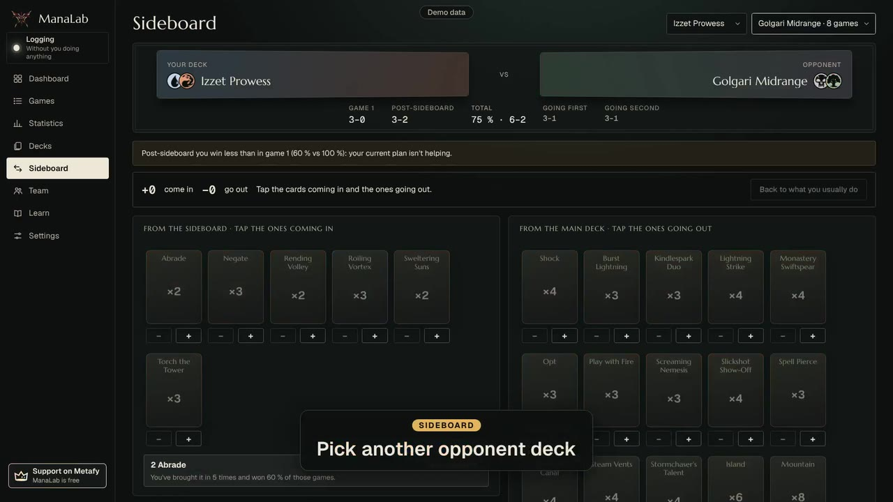

ManaLab-Anleitung
Was jeder Bereich der App macht und wie du ihn nutzt, in Arena und Magic Online. Schwerpunkt auf den Hauptfunktionen und dem KI-Coach.
Was ist ManaLab
ManaLab speichert jede Partie, die du in MTG Arena und Magic Online (MTGO) spielst, auf deinem PC und zeigt dir, was funktioniert: deine Gewinnraten nach Deck, Gegner und Matchup, deine Mulligans, deine Fehler und deine Sideboard-Änderungen.
Die App ist kostenlos. Nur die KI-Analyse verlorener Partien kostet etwas: 6 $ im Monat, mit kostenlosem Test.
Erste Schritte
- Lade die portable Version (ZIP) herunter, entpacke sie und öffne ManaLab. Keine Installation nötig. Für ein späteres Update entpackst du die neue Version über den alten Ordner: deine Daten bleiben erhalten.
- Gehe in Arena zu Optionen › Konto und aktiviere «Detaillierte Protokolle (Plugin-Unterstützung)» (Detailed Logs (Plugin Support)). Starte Arena danach neu. Ohne das kann ManaLab deine Arena-Partien nicht lesen. Magic Online braucht keine Einstellung.
- Solange du noch kein Spiel hast, zeigt das Dashboard «Bereite den Tisch vor», mit den Schritten, die noch fehlen, und dem, was jedes Spiel speichert. Mit «Verbergen» verschwindet es für immer. Die Einstiegsanleitung siehst du wieder unter Einstellungen › Daten und Info, mit «Einstiegsanleitung anzeigen».
- ManaLab beginnt beim Öffnen von selbst mit der Aufzeichnung (das kannst du unter Einstellungen › Spiele ändern). Ab dann wird jede Partie, in Arena und in Magic Online, automatisch gespeichert. Das Feld unter dem ManaLab-Namen in der Seitenleiste zeigt «Zeichnet auf».
- Spiele im Fenster- oder im randlosen Modus: Im exklusiven Vollbild ist das Overlay nicht zu sehen.
Voraussetzungen: Windows 10 oder 11 und Arena, Magic Online oder beides.
Magic Online
ManaLab zeichnet MTGO genauso auf wie Arena, und du musst nichts einrichten: weder «Detaillierte Protokolle (Plugin-Unterstützung)» noch Einstellungen. Wenn ManaLab aufzeichnet, öffne Magic Online, und ManaLab erkennt es von selbst. Der Magic-Online-Status in der obersten Zeile des Dashboards zeigt «Nicht erkannt», bis ManaLab das Spiel findet, und verfolgt danach deine Partien wie der von Arena.
Es werden alle Formate aufgezeichnet: deine Starthände und Mulligans, ob du zuerst oder als Zweiter gespielt hast, dein Deck, die Karten, die dein Gegner zeigt, die Lebenspunkte, die Wiederholung und der Zeitverlauf. Dein Deck bekommt den Namen, unter dem du es in Magic Online gespeichert hast, wenn die Liste genau übereinstimmt, sonst einen Namen nach seinen Farben; einen Namen, den du selbst unter Decks eingibst, ersetzt ManaLab nie.
- Overlay: die Karten, die in deinem Deck übrig sind, und die, die der Gegner gezeigt hat, über Magic Online (siehe Overlay).
- Highlights: «Moment festhalten» funktioniert auch in Magic Online (siehe Screenshots und Highlights). ManaLab macht nicht von selbst Screenshots.
- Importieren: Drücke unter Spiele auf «⋯» › «Partien importieren», wähle «Arena- oder Magic-Online-Log» und eine Datei
mtgo.log, um Partien zu holen, die du bei geschlossenem ManaLab gespielt hast. Sie zählen als deine, und Partien, die du schon hast, werden nicht doppelt angelegt. - Speicherort des Logs: Einstellungen › Spiele, in der Gruppe Magic Online, «Datei mtgo.log». Lass es auf «Standard», außer Magic Online speichert sein Log in einem anderen Ordner.
Was in MTGO anders ist
- Phasen und getappte Karten werden abgeleitet. Magic Online sendet sie nicht, deshalb leitet ManaLab sie allein aus dem Log ab. In der Wiederholung ist alles Abgeleitete mit ≈ markiert, weil es nicht exakt sein muss.
- Spielsteine und Embleme (zum Beispiel Schatz oder Blut) erscheinen nur in der Wiederholung. Sie stehen nicht in den Gegnerkarten, in deinen Decklisten und nicht im Overlay.
- Das Overlay kann weniger zeigen als in Arena, wenn das Log keinen Tischzustand enthält.
- Das Sideboard: Magic Online sagt erst zu Beginn des Spiels, mit welchem Deck du Spiel 2 und 3 spielst, deshalb fragt ManaLab dich (nächster Abschnitt).
Mehr auf der Website: Magic-Online-Tracker: was ManaLab speichert und wie es funktioniert (auf Englisch).
Sideboard in Magic Online
Nach einem Spiel wiederholt das Log von Magic Online deine ursprüngliche Liste, auch wenn du Sideboarding gemacht hast. Die echte Liste kommt erst, wenn das nächste Spiel beginnt. Darum erscheint zu Beginn des Sideboardings ein kleines Fenster «Sideboard · Spiel N» über Magic Online. Es nimmt dem Spiel nie den Fokus und schließt sich von selbst, wenn das nächste Spiel beginnt. Es hat drei Schaltflächen:
- «Diese Änderung übernehmen» wiederholt, was du beim letzten Mal gegen dasselbe Gegner-Deck gemacht hast. Sie erscheint nur, wenn es ein letztes Mal gibt.
- «Keine Änderungen» behält deine Grundliste.
- «Bearbeiten» öffnet ManaLab mit deinem Hauptdeck und deinem Sideboard nebeneinander: − nimmt eine Kopie heraus, + holt eine hinein, und du kannst nach einer Karte suchen. Der Zähler «Rein · Raus» warnt dich, wenn die Zahlen nicht aufgehen, aber du kannst trotzdem bestätigen.
Wenn du das Fenster ignorierst, bleibt die Liste unbestätigt. Das Overlay zeigt dann «Liste unbestätigt», ungefähre Wahrscheinlichkeiten mit vorangestelltem ≈ und «≥ N Karten draußen (nicht identifiziert)»: ManaLab weiß, wie viele Karten dein Deck verlassen haben, aber nicht welche. Korrigiere das mit «Sideboard korrigieren» in der Seitenleiste, während des Spiels oder zwischen den Spielen. Was du auch wählst: Die echte Liste aus dem Log gilt immer, sobald Magic Online sie sendet.
Du kannst es auch nach dem Spiel korrigieren: Öffne unter Spiele die Partie, gehe zum Reiter Spiel und drücke «Sideboard korrigieren». Das gibt es für deine eigenen Magic-Online-Partien ab Spiel 2, deren Liste nicht bestätigt wurde. Spätere unbestätigte Spiele desselben Matches werden aus deiner Korrektur neu berechnet, und das Spiel gilt danach als bestätigt – in der Statistik, im Sideboard-Guide und in der KI-Analyse.
Ein nie bestätigtes Spiel zeigt in seinem Reiter Spiel «Sideboard nicht bestätigt». Der Sideboard-Guide zählt seine Änderungen nicht, und der KI-Analyse wird gesagt, dass sie unbekannt sind, nicht dass es keine gab.
Ab Spiel 2 zeigt der Reiter Spiel, welche Karten du aus dem Sideboard hinein- und ins Sideboard herausgenommen hast, im Vergleich zu deiner ursprünglichen Liste (Spiel 1), unter «Im Vergleich zur ursprünglichen Liste». Bist du wieder bei der ursprünglichen Liste, wird nichts angezeigt. Um das Fenster auszuschalten, nutze «Nach Änderungen am Sideboard fragen (Magic Online)» unter Einstellungen › Overlay; «Sideboard korrigieren» bleibt verfügbar.
Dashboard: dein Tisch heute
Das Dashboard heißt «Dein Tisch heute» und zeigt, ob ManaLab richtig aufzeichnet. Unter dem Titel steht eine Zeile mit «Zeichnet auf» (oder «Pausiert») und dem Zustand jedes Spiels: Arena und Magic Online zeigen jeweils «Hört zu», «Im Spiel», «Nicht erkannt» oder «Gestoppt». Die Schaltfläche oben rechts heißt «Aufzeichnung pausieren»; bei pausierter Aufzeichnung warnt ein Streifen, dass Partien, die du jetzt spielst, nicht gespeichert werden, und «Fortsetzen» schaltet sie wieder ein. Darunter siehst du:
- Heutige Sitzung: dein heutiger Stand in Matches und in Spielen, eine Spalte pro Match und rechts deine letzten 7 Tage (Gewinnrate im Vergleich zu den 7 Tagen davor), aktuelle Serie, Spielzeit und deine letzten 10 Matches. «Sitzungsübersicht ansehen» öffnet die vollständige Übersicht.
- Laufendes Match: während du spielst, dein Deck und die Spielnummer; wenn das Match endet, wird daraus «Letztes Match» mit dem Ergebnis, beiden Decks und den Schaltflächen «Wiederholung ansehen», «Markieren, was schiefging» und, nach einer Niederlage, «Mit KI analysieren».
- Letzte Matches: deine neuesten Matches nach Tagen (klicke eines an, um seine Spiele zu sehen); «Alle ansehen» öffnet Spiele.
- Zum Durchsehen: deine letzten Niederlagen ohne markierte Fehler und ohne Notizen, jeweils mit einer Schaltfläche «Durchsehen».
- Was sich am häufigsten wiederholt: die Fehler, die du am häufigsten markierst, über 30 Tage; «30 Tage · alle ansehen» öffnet sie in den Statistiken.
- Aktivität: das Letzte, was ManaLab getan hat, mit «Protokoll ansehen» für das vollständige Protokoll.
Solange du noch kein Spiel hast, siehst du statt dieser Karten «Bereite den Tisch vor» mit den Schritten zur Einrichtung. Gibt es eine neue Version, erscheint oben ein Hinweis. In der Seitenleiste findest du außerdem «Moment festhalten» während eines Spiels.

Spiele: dein Verlauf
Hier steht dein gesamter Verlauf, nach Tagen und mit dem Gegner vorne. Oben rechts findet ein Suchfeld einen Gegner, ein Deck oder ein Event, und «Alle», «Siege» und «Niederlagen» filtern nach Ergebnis; unter dem Titel stehen der Deck-Filter und, wenn du Spiele in mehr als einem Format hast, der Format-Filter. Jede Zeile ist ein Match mit seinem Ergebnis, dem Deck des Gegners, deinem Deck, seinen Spielen und dem Stand. Klicke ein Match an, um rechts sein Duell zu sehen, mit «Spiel öffnen» und «Wiederholung ansehen», und um seine Spiele aufzuklappen, die zeigen, ob du Erster oder Zweiter warst.
Die Schaltfläche «⋯» («Weitere Optionen für Spiele») bietet «Sitzung vorbereiten» und «Partien importieren». Jedes Spiel zeigt sein Format; wenn ManaLab es nicht lesen konnte oder du es ändern willst, nutze «Format festlegen…» im Menü «⋯» des Spiels.
Wenn du ein Spiel öffnest, siehst du diese Reiter («Zurück» führt zur Liste):
- Match: die Zusammenfassung des Matches und seiner Spiele.
- Spiel: Starthand, ob du Erster oder Zweiter warst, Mulligans, welche Karten du aus dem Sideboard hinein- und ins Sideboard herausgenommen hast, und deine Screenshots.
- Wiederholung: das Spiel Schritt für Schritt, Zug für Zug, mit einer Ansicht «Übersicht». In Magic Online sind abgeleitete Schritte mit ≈ markiert, und Spielsteine erscheinen nur hier.
- Gegner: die Gegnerkarten, die du gesehen hast, und sein erkannter Archetyp.
- Analyse: die KI-Erklärung (Abonnenten und kostenloser Test).
- Notizen: deine Fehler und Notizen.


Video im Web: https://manalab.es/guia/guia_manalab_de.html#video-replay

Video im Web: https://manalab.es/guia/guia_manalab_de.html#video-opening-hand-mulligans

Video im Web: https://manalab.es/guia/guia_manalab_de.html#video-opponent
Partien importieren
Unter Spiele holt «⋯» › «Partien importieren» Partien aus zwei Quellen: einer .manalab-Datei, die dir jemand schickt (sie entsteht mit «Partie exportieren» im Menü «⋯» jeder Partie), oder einem Arena- oder Magic-Online-Log: einem Player.log von Arena oder einem mtgo.log von Magic Online, mit Partien, die du bei geschlossenem ManaLab oder an einem anderen PC gespielt hast.
Du wählst, welche Partien importiert werden, und die, die du schon hast, sind markiert, sodass nichts doppelt angelegt wird. Importierte Partien haben Wiederholung, Hände, Mulligans, Deck, Notizen und Coach-Tags, aber keine Screenshots und keine KI-Analyse.
Wenn du mit geschlossenem ManaLab spielst, musst du das oft nicht von Hand tun: Beim Start der Aufzeichnung sieht ManaLab im Arena-Log nach, und wenn es Spiele findet, die du nicht hast, bietet dir ein goldener Streifen im Dashboard sie an, mit «Wiederherstellen» (oder «Alle N wiederherstellen»), «Welche?» und «Jetzt nicht». Diese Spiele haben keine Screenshots, wie jedes aus einem Log importierte Spiel.
Partien eines anderen Spielers tragen ihre Markierung und zählen nie in deiner Statistik, deinen Trends, Berichten oder im Team. Partien, die du aus deinem eigenen Log importierst, zählen als deine.

Video im Web: https://manalab.es/guia/guia_manalab_de.html#video-import-games
Screenshots und Highlights
ManaLab macht nicht von selbst Screenshots: Starthand, Mulligans und Ergebnis sind schon in den Daten jedes Spiels gespeichert. Du kannst aber einen Screenshot von jedem beliebigen Moment speichern, in Arena und in Magic Online. Das ist ein Highlight.
- Drücke F8 (die Taste kannst du unter Einstellungen › Spiele bei «Screenshots und Highlights» ändern, mit «Tastenkürzel» und «Taste»).
- Oder drücke die Schaltfläche «Moment festhalten» über dem Spiel (du kannst sie mit «Schaltfläche während des Spiels über dem Spiel anzeigen» entfernen).
- Oder drücke «Moment festhalten» in der Seitenleiste von ManaLab.
Die Schaltflächen erscheinen nur, solange ein Spiel läuft. Steht in der Statuszeile des Dashboards «Fenster nicht erkannt, keine Screenshots», findet ManaLab das Spielfenster nicht und kann nichts festhalten: Öffne das Spiel im Fenster- oder randlosen Modus.
Danach öffnest du im Reiter Spiel den Screenshot und schreibst eine Notiz zu diesem Moment.

Video im Web: https://manalab.es/guia/guia_manalab_de.html#video-capture-moment
Notizen und Fehler
Im Reiter Notizen jeder Partie markierst du deine Fehler (mit Tags) und schreibst auf, was du dir merken willst. Diese Fehler fließen in den Bericht für deinen Coach und in die Statistik wiederholter Fehler ein.
Decks
Jedes Deck, das du gespielt hast, erscheint in einer eigenen Box, mit den Manasymbolen seiner Farben, deinen Matches und deiner Siegquote. Fahre mit der Maus über eine Box, um sie zu öffnen, und klicke eine an, um dieses Deck zu wählen und seine Details zu sehen. Von hier aus kannst du:
- Ein Deck umbenennen («Deckname», mit «Speichern» oder «Abbrechen») oder mit «Arena-Namen verwenden» zum Namen zurückkehren, den Arena verwendet. In Magic Online übernimmt das Deck den Namen, unter dem du es gespeichert hast, wenn die Liste genau übereinstimmt; sonst benennt ManaLab es nach seinen Farben.
- Das Aussehen der Box unter «Box-Oberfläche» ändern: «Glatt», «Geprägt» oder «Glänzend».
- Seine Siegquote, sein «Bestes Matchup» und sein «Schlechtestes Matchup» sowie die «Manakurve · Zauber nach Kosten» der gewählten Liste ansehen.
- Eine Variante wählen, wenn ein Deck mehrere Listen hat («Variante»), und ihre Liste und ihr Sideboard ansehen.
- Deine Matches und deine Siegquote mit dem Deck prüfen. Decks zählt Matches, nicht einzelne Spiele, und unbeendete Matches zählen nicht.
Um deine Spiele mit den neuesten Meta-Decks neu zu prüfen, gehe zu Einstellungen › Sprache und Darstellung, unter «Meta-Decks», und drücke «Spiele neu einordnen».
Statistiken: deine Gewinnraten
Der Bildschirm «So läuft es» hat oben eine Zeitraumauswahl, «7 Tage», «30 Tage», «90 Tage», «Alle» oder «Seit…» (du wählst ein Startdatum), und zwei Filter, Format (erscheint nur, wenn du Spiele in mehr als einem Format hast) und Deck. Jedes Spiel behält sein echtes Format, sodass du immer ein Format auf einmal ansehen kannst. Der gewählte Zeitraum wird gemerkt. Du siehst:
- Deine Gewinnrate in Matches und in Spielen, jeweils verglichen mit dem vorherigen Zeitraum gleicher Länge, dazu deine letzten 10 Matches und deine aktuelle Serie. «Deine Karte des Monats ansehen» öffnet deine Karte des Monats.
- «Gegen jede Farbe»: ein Rad mit deiner Gewinnrate gegen Gegner, die die jeweilige Farbe spielen.
- «Gegen jedes Deck»: die Matchup-Tabelle, die zeigt, gegen welche Decks du gewinnst und gegen welche du verlierst, mit den Ergebnissen von Spiel 1 und nach dem Sideboard. Ein Sternchen (*) bedeutet weniger als 10 Spiele.
- «Letzte Tage»: ein Diagramm deiner Siege und Niederlagen pro Tag.
- «Aufschlüsselung»: nach Mulligans, Erster / Zweiter, Deck und Gegner, gezählt in Spielen oder in Matches.
- «Was sich am häufigsten wiederholt»: die Fehler, die du markiert hast, über 30 Tage, 90 Tage oder den gesamten Verlauf, und «Markierte Fehler».
Das Deck des Gegners wird benannt, indem seine Karten mit den meistgespielten Meta-Decks des Formats des Spiels verglichen werden; diese werden alle 3 Tage aktualisiert (Einstellungen › Sprache und Darstellung). Passt nichts eindeutig, wird es nach seinen Farben benannt.
Das Menü «⋯» bietet «HTML-Bericht» und «Für den Coach exportieren».


Video im Web: https://manalab.es/guia/guia_manalab_de.html#video-statistics
Sideboard: dein Plan pro Matchup
Wähle dein Deck und deinen Gegner. ManaLab zeigt deine Ergebnisse in diesem Matchup («Spiel 1», «Nach Sideboard», «Gesamt», «Erster» und «Zweiter») und schlägt vor, was du rausnehmen und reinbringen solltest, jeweils mit einer Vertrauensstufe, auf Grundlage deiner eigenen Spiele.
Deinen Plan baust du, indem du Karten antippst: Unter «Aus dem Sideboard · tippe an, was reinkommt» wählst du, was reinkommt, und unter «Aus dem Hauptdeck · tippe an, was rausgeht», was rausgeht. Er wird automatisch gespeichert. Unter «Notizen zu diesem Matchup» hältst du fest, was du dir merken willst, und unter «Plan von Hand schreiben» kannst du den Plan in «Rein» und «Raus» eintippen. Dein Plan und deine Notizen erscheinen im Bericht für den Coach. «Zurück zu deinem üblichen Plan» übernimmt die Änderungen, die du in diesem Matchup wiederholst, und «Rückgängig» holt deinen vorherigen Plan zurück.
Weiter unten siehst du «Deine Änderungen in diesem Matchup», «Deine Karten in diesem Matchup» (wie sich jede deiner Karten schlägt) und «Am häufigsten gesehene gegnerische Karten». In Magic Online zählen Spiele nicht, deren Sideboard nie bestätigt wurde.
Mit einem Abo schlägt dir «Plan von der KI anfordern» einen Sideboard-Plan vor, der auf deinen Spielen in diesem Matchup beruht, unter «Von der KI vorgeschlagener Plan». Er ersetzt deinen eigenen nicht.

Video im Web: https://manalab.es/guia/guia_manalab_de.html#video-sideboard-guide
Overlay: dein Deck über dem Spiel
Das Overlay besteht aus zwei Panels über dem Spielfenster, in Arena und in Magic Online. Mein Panel zeigt die Karten, die in deiner Bibliothek übrig sind, mit den übrigen Kopien von denen im Deck (standardmäßig als Zahl, etwa 2/4), die Ziehwahrscheinlichkeit jeder Karte und eine Zeile «Länder». Das Panel des Gegners zeigt die Karten, die er gespielt oder gezeigt hat, wie viele Kopien du gesehen hast und, wenn ManaLab es erkennt, seinen Archetyp. Es zeigt nur öffentliche Informationen oder das, was sich aus dem Gespielten ableiten lässt.
Es erscheint, solange das Spiel das aktive Fenster ist, im Fenster- oder randlosen Modus (nicht im exklusiven Vollbild). Steht in der Statuszeile des Dashboards «Fenster nicht erkannt, keine Screenshots», findet ManaLab das Spielfenster nicht: Öffne das Spiel im Fenster- oder randlosen Modus. Unter Einstellungen › Overlay kannst du festlegen:
- «Overlay anzeigen» (standardmäßig an) und «Über Arena testen», das es 10 Sekunden lang zeigt.
- Die «Panelgröße» (voll, mittel oder minimal), die «Farben» (mit einer Option für Farbenblinde, mit den Buchstaben W U B R G) und den hohen Kontrast.
- «Angezeigte Ziehwahrscheinlichkeit»: die beim nächsten Zug oder in den nächsten 2 oder 3 Zügen.
- «Deckkraft des Hintergrunds», «Größe» und «Abstand von oben». Du kannst jedes Panel auch verschieben, indem du seine obere Leiste über dem Spiel ziehst; «Overlay auf Standard zurücksetzen» setzt es zurück.
- «Wann es angezeigt wird»: «Immer sichtbar» oder «Nur wenn die Maus über einer Zone ist».
- «Was angezeigt wird», mit einem Schalter für jedes Element jedes Panels. Unter «Jede Karte» in Mein Panel wählt «Kopien» zwischen «Zahl (2/4)» (Standard: übrige Kopien und Kopien im Deck) und «Rauten» (eine gefüllte Raute pro übrige Kopie).
ManaLab-Marke: ein kleines «ManaLab» in einer Ecke von Mein Panel, damit Zuschauer deines Streams wissen, was du benutzt. Du schaltest sie unter Einstellungen › Overlay › Was angezeigt wird › Mein Panel › «ManaLab-Marke» aus.
Länderliste: Fahre mit der Maus über die Zeile «Länder» in Mein Panel, und es öffnet sich eine Liste mit jedem Land, das dir noch bleibt, seinen Kopien vom Gesamtbestand und der Wahrscheinlichkeit, es als Nächstes zu ziehen. Sie funktioniert in Arena und Magic Online gleich. Du schaltest sie unter Einstellungen › Overlay › Was angezeigt wird › Mein Panel um: Länderliste beim Überfahren von „Länder“ mit der Maus (standardmäßig an; sie braucht die Zeile «Länder»).
Zwischen den Spielen eines Best-of-three-Matches zeigt dir ein Panel in der Mitte des Spiels deinen Plan für diesen Gegner, falls du in Sideboard einen gespeichert hast: «Rein», «Raus» und deine Notiz. Es verschwindet von selbst, wenn das nächste Spiel beginnt.
Wenn das Log von Magic Online Tischzeilen enthält, leitet ManaLab deine Hand und deine Bibliothek ab und zeigt ihre Wahrscheinlichkeiten. Enthält es keine, zeigt das Overlay nur die Deckliste mit übrigen und gesamten Kopien: keine Hand, keine Bibliotheksgröße und keine Ziehwahrscheinlichkeit. Es zeigt nie erfundene Zahlen. Nach einem Sideboarding kann es «Liste unbestätigt», Wahrscheinlichkeiten mit ≈ und «≥ N Karten draußen (nicht identifiziert)» zeigen (siehe Sideboard in Magic Online).

Video im Web: https://manalab.es/guia/guia_manalab_de.html#video-in-game-overlay
KI-Coach: Analyse verlorener Partien
Der KI-Coach erklärt, was in einer verlorenen Partie schiefgelaufen ist und was du beim nächsten Mal versuchen kannst. Er ist der einzige kostenpflichtige Teil von ManaLab: 6 $ im Monat. Vorher kannst du ihn kostenlos testen. Das Abo ist die Mitgliedschaft «ManaLab AI Coach» auf Metafy.
- Abonniere auf Metafy (Schaltfläche «Auf Metafy abonnieren» unter Einstellungen › Team und KI oder im Reiter Analyse). Du bekommst einen Code per E-Mail.
- Gehe zu Einstellungen › Team und KI, füge den Code bei «Abo-Code» ein und drücke «Prüfen».
- Öffne unter Spiele eine Niederlage und gehe zum Reiter Analyse.
- Wenn du willst, schreibe eine konkrete Frage, zum Beispiel: «Hätte ich mulligan machen sollen?» oder «Habe ich in Zug 5 schlecht angegriffen?».
- Drücke «Mit KI analysieren». Es dauert ein paar Sekunden. Die Antwort wird gespeichert, du zahlst also nie zweimal für dieselbe Partie.
Kostenloser Test: Drücke «Gratis-Test anfragen» (unter Einstellungen › Team und KI oder im Reiter Analyse). Dein E-Mail-Programm öffnet sich mit einer vorbereiteten Nachricht. Sende sie, und wir antworten mit einem Code für 5 Analysen, 30 Tage gültig. Du brauchst weder Karte noch Konto. Den Code gibst du wie oben beschrieben ein.
Jeder Code hat ein Tageslimit, und der Reiter zeigt dir, wie viele Analysen du noch hast. Analysiert werden nur deine eigenen Partien, keine importierten.
Gesendet werden nur die Daten der Partie, die du analysierst: dein Deck und Sideboard, die gesehenen Gegnerkarten, der Spielverlauf und eine kurze Zusammenfassung der anderen Spiele des Matches. Dein Name, der Name deines Gegners und die komplette Log-Datei werden nie gesendet. Wenn du eine schreibst, wird auch deine Frage gesendet.
Export für den Coach und Team
«Für den Coach exportieren» (im Menü «⋯» der Statistiken) erzeugt eine Seite mit deiner Zusammenfassung, deinen Matchups, deinen markierten Fehlern und deinen Partien mit ihren Notizen. Sie öffnet sich im Browser: Von dort kannst du sie drucken oder als PDF speichern und an deinen Coach schicken.
Unter Spiele kannst du mit «⋯» › «Sitzung vorbereiten» die Partien ankreuzen, die du durchgehen willst, und «Sitzungsbericht erstellen» baut einen einzigen Bericht mit deinen Händen, Mulligans, Schlüsselmomenten, Zugübersicht, Notizen und Highlights. Du kannst die Namen deiner Gegner ausblenden. Er öffnet sich im Browser und funktioniert offline: drucke ihn oder speichere ihn als PDF.
Mehr auf der Website: Leitfaden für Coaches: so überprüfst du die Partien eines Spielers (auf Englisch).

Video im Web: https://manalab.es/guia/guia_manalab_de.html#video-prepare-session
Im Team kannst du Partien und Notizen über einen gemeinsamen Ordner (Google Drive, Dropbox oder OneDrive) mit deinem Team teilen. Richte es zuerst unter Einstellungen › Team und KI ein: Team-Ordner, dein Name und deine Rolle (Spieler oder Coach), dann drücke «Jetzt synchronisieren». Jede Person schreibt nur in ihren eigenen Unterordner. Auch Screenshots werden mit ihren Notizen geteilt (das kannst du unter Einstellungen › Team und KI ausschalten), und du kannst die Namen deiner Gegner ausblenden.
Auf dem Team-Bildschirm zeigt jede Partie eines Teamkollegen dieselben Details wie deine: Hände, Screenshots mit ihren Notizen, Wiederholung, Gegner-Deck und Notizen. Wenn du Coach bist, schreibst du deine Notiz im Reiter Notizen.

Video im Web: https://manalab.es/guia/guia_manalab_de.html#video-coach-tags-trends-team
Lernen: Guides von Metafy
Lernen versammelt Guides von Metafy, der Plattform, auf der Spieler Guides veröffentlichen und Unterricht geben. Alles öffnet sich in deinem Browser: ManaLab zeigt nur die Liste.
- «Empfohlen · Kooperation» ist ein Autor, der mit ManaLab zusammenarbeitet. Gibt es mehrere, wechseln sie von selbst; «Auf Metafy ansehen» öffnet sein Profil.
- «Für dich» erscheint nur, wenn ein Guide passt: ManaLab schaut auf das Deck, das du am meisten spielst, und das gegnerische Deck, gegen das du dich am schwersten tust (mindestens je 5 Spiele in den letzten 30 Tagen), und bietet bis zu zwei Guides an, die es nennen. Das wird auf deinem PC mit der schon heruntergeladenen Liste berechnet.
- Die Guides, jeder mit Cover, Preis («Kostenlos», «Abonnenten» oder kostenpflichtig), Autor und Bewertung. Filtere mit «Alle», «Kostenlos», «Kostenpflichtig» oder «Abonnenten» und nach Autor («Alle Autoren»), sortiere nach «Meistgekauft», «Bestbewertet» oder «Kürzeste» und suche mit «Guide suchen». Klicke einen Guide an, um ihn auf Metafy zu öffnen.
- Ohne Verbindung erscheint «Offline.» mit dem Datum der zuletzt gespeicherten Liste und einer Schaltfläche «Erneut versuchen».
Einstellungen
Die Einstellungen werden von selbst gespeichert, und jede Änderung gilt sofort. Das Menü hat fünf Bereiche:
- Spiele: «Aufzeichnung beim Öffnen von ManaLab starten» und «Übersicht am Ende der Sitzung anzeigen»; die Pfade von Arenas Player.log und Magic Onlines mtgo.log (nur wenn sie nicht automatisch gefunden werden), die Warnung zu Arenas detaillierten Protokollen und unter «Erweitert» der «Ersatzmonitor» jedes Spiels; und «Screenshots und Highlights»: die Schaltfläche über dem Spiel, das Tastenkürzel und seine Taste.
- Overlay: alles zum Overlay und die Sideboard-Frage von Magic Online.
- Sprache und Darstellung: die Sprache der Oberfläche (ManaLab gibt es in 9 Sprachen; eine Änderung erfordert einen Neustart), die Sprache der Kartennamen und die «Textgröße»; die Scryfall-Abfrage bei fehlenden Karten und die Kartendatenbank; und die «Meta-Decks».
- Team und KI: der Team-Ordner, dein Name und deine Rolle, was du teilst, und dein KI-Abo-Code.
- Daten und Info: der Datenordner, das Metafy-Banner, die Einstiegsanleitung, «Fehler melden», der Hinweis auf neue Versionen und «Nach Updates suchen».
Fehler melden
Wenn etwas nicht funktioniert, kannst du es uns direkt in der App mitteilen:
- Öffne Einstellungen › Daten und Info und drücke «Fehler melden».
- Beschreibe das Problem bei «Was ist passiert?». Wenn du willst, ergänze, was du erwartet hast, und deine E-Mail-Adresse, damit wir dir antworten können.
- Lass «registro.log anhängen (empfohlen)» eingeschaltet und drücke «Meldung senden».
Das Fenster zeigt genau, was gesendet wird: die ManaLab-Version, die Version deines Betriebssystems, die Sprache der Oberfläche, ob du Arena oder Magic Online nutzt, eine anonyme Kennung deines PCs (um Meldungen pro Tag zu begrenzen) und, wenn der Anhang aktiv ist, die letzten Zeilen von registro.log, ohne Codes, Schlüssel oder deinen Benutzernamen. Deine Partien und Decks werden nie gesendet.
Ohne Verbindung wird die Meldung aufbewahrt und später gesendet: Bis zu 3 werden gespeichert, und sie verfallen nach 7 Tagen.
ManaLab aktualisieren
ManaLab aktualisiert sich selbst. Beim Öffnen und einmal am Tag prüft es, ob es eine neue Version gibt; wenn ja, erscheint oben ein Hinweis. Es wird nichts heruntergeladen, bis du «Jetzt aktualisieren» drückst.
- Drücke im Hinweis «Neuerungen ansehen», wenn du lesen willst, was sie bringt.
- Drücke «Jetzt aktualisieren». ManaLab lädt die neue Version herunter, schließt sich und öffnet sich schon aktualisiert wieder. Die Windows-Warnung erscheint nicht. Kann sich deine Kopie nicht selbst aktualisieren, bietet das Fenster «ZIP von Hand herunterladen» an: Lade es herunter, schließe ManaLab und entpacke es über seinen Ordner.
Deine Spiele, Screenshots, Einstellungen und dein Abo-Code werden getrennt gespeichert, in %LOCALAPPDATA%\ManaLab, sodass sie beim Aktualisieren nicht verloren gehen.
Wenn du ManaLab 3.0 nach dem Update zum ersten Mal öffnest, listet ein Fenster «Willkommen bei ManaLab 3.0» die Neuerungen auf; «Verstanden» schließt es für immer.
Du kannst jederzeit unter Einstellungen › Daten und Info › «Nach Updates suchen» prüfen (hast du schon die neueste, sagt es dir das) und den Hinweis mit «Bei einer neuen Version Bescheid geben» ausschalten.

Video im Web: https://manalab.es/guia/guia_manalab_de.html#video-in-app-updates
Datenschutz
Deine Spiele, Screenshots und Statistiken bleiben auf deinem PC.
- ManaLab verändert weder Arena noch Magic Online, liest ihren Speicher nicht und verbindet sich nicht mit ihren Servern.
- Von Arena liest es das Player.log. Von Magic Online liest es nur die Log-Dateien, die das Spiel auf deinem PC hinterlässt, etwa mtgo.log, nie das, was in seinem Fenster zu sehen ist. Für das Overlay und die Highlights muss es nur wissen, wo das Spielfenster ist.
- Es macht nicht von selbst Screenshots: Es speichert ein Bild des Spielfensters nur, wenn du ein Highlight verlangst (mit F8, der Schaltfläche über dem Spiel oder «Moment festhalten») oder, wenn es das Fenster nicht findet und du in den Einstellungen einen «Ersatzmonitor» gewählt hast, von diesem Monitor.
- Einmal am Tag fragt es GitHub, ob es eine neue Version gibt (antwortet GitHub nicht, fragt es manalab.es ab, ohne Daten von dir) und lädt die neue nur herunter, wenn du «Jetzt aktualisieren» drückst. Außerdem lädt es die Meta-Decks herunter und fragt bei Scryfall Kartennamen und -bilder ab. Das kannst du in den Einstellungen ausschalten.
- Beim Öffnen und alle 6 Stunden lädt es eine kleine Inhaltsdatei von manalab.es herunter (zum Beispiel den Unterstützungslink oder die in Lernen gezeigten Autoren) und sendet dabei nichts von dir außer der ManaLab-Version. Sie hat keinen eigenen Schalter.
- Am Ende des Dashboards zeigt es eine Metafy-Anzeige, die du mit dem X oder unter Einstellungen › Daten und Info entfernen kannst. ManaLab gibt ihr keine Daten über deine Spiele.
- Lernen: Beim Öffnen (höchstens einmal pro Stunde) fragt es einen ManaLab-Server nach der Guide-Liste und sendet nichts von dir außer der ManaLab-Version. Die Cover laden von Metafy und die Fotos der Autoren von manalab.es; wie bei jeder Website können diese Server deine IP-Adresse sehen. Links öffnen sich in deinem Browser.
- Zahlen der empfohlenen Autoren: Höchstens einmal pro Stunde sendet ManaLab an einen eigenen Server, wie oft jeder empfohlene Autor gesehen wurde und wie viele Klicks er bekam, pro Tag und nur als Summen, mit der ManaLab-Version. Nichts über deine Spiele, dein Team oder dein Konto, und der Server speichert deine IP nicht. Es gibt keinen eigenen Schalter.
- Es sendet nur Daten, wenn du es verlangst: die KI-Analyse (die Daten dieses Spiels, ohne Namen), einen Fehlerbericht (siehe oben) oder Team und das Exportieren eines Spiels, die teilen, was du wählst. Nie deinen Verlauf.